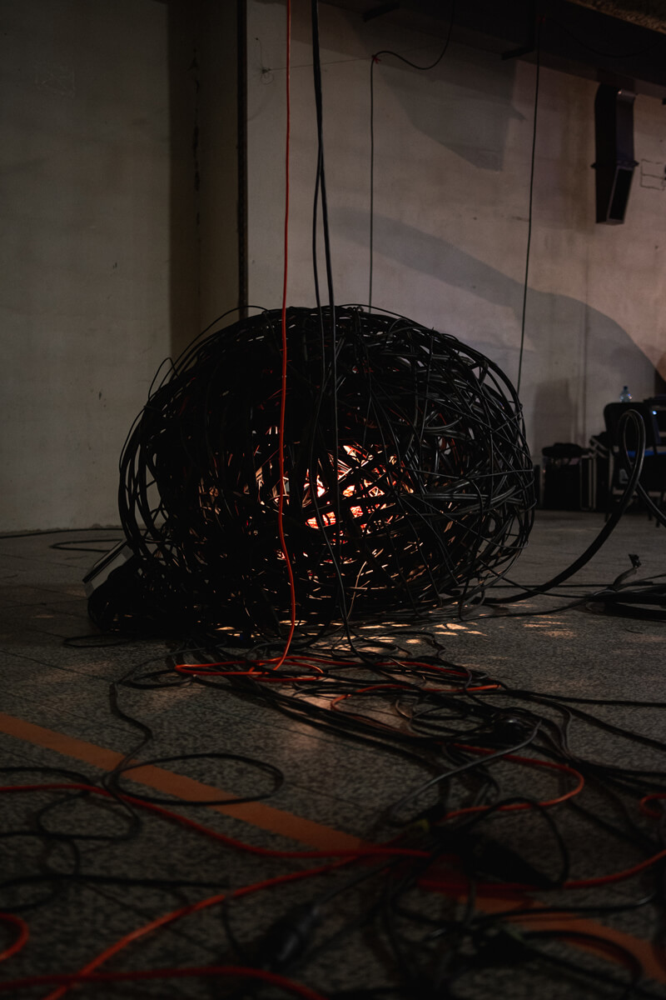
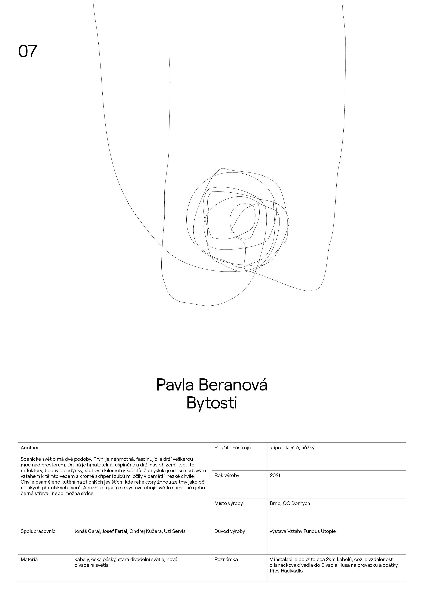

Pavla
Beranová
Světlo pohlcuje a proměňuje
BIO:
Pavla
Beranová je světelná designérka. Vždy jí zajímalo všechno, co souvisí se
světlem. Paprsky, čočky, fotoaparáty, ohňostroje, impresionismus,
elektrické obvody i tma. Přes veškeré pokusy o únik k jiným oborům se
světlo stalo její profesí. Potýká se s ním hlavně v divadle,
architektuře a výstavnictví a také na Divadelní fakultě JAMU.
O
INSTALACI: název: BYTOSTI
Scénické světlo má dvě podoby. První je nehmotná, fascinující a drží veškerou moc nad prostorem. Druhá je hmatatelná, ušpiněná a drží nás při zemi. Jsou to reflektory, bedny a bedýnky, stativy a kilometry kabelů. Zamyslela jsem se nad svým vztahem k těmto věcem a kromě skřípění zubů mi ožily v paměti i hezké chvíle. Chvíle osamělého kutění na ztichlých jevištích, kde reflektory žhnou ze tmy jako oči nějakých přátelských tvorů. A rozhodla jsem se vystavit obojí: světlo samotné i jeho černá střeva...nebo možná srdce.




